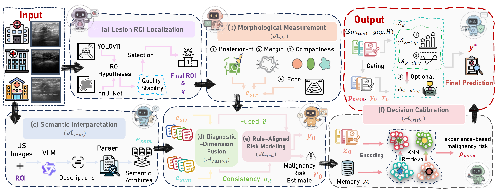

MICCAI 2026 Manuscript
RACA: Rule-Aligned Collaborative Agents for Evidence-Grounded Breast Ultrasound Classification
A rule-aligned multi-agent framework for transparent and clinically grounded breast ultrasound diagnosis.
* Equal contribution † Co-corresponding authors

Highlights
- Rule-aligned diagnosis: RACA anchors breast ultrasound (BUS) classification to standardized clinical descriptors such as shape, margin, echogenicity, and posterior features.
- Collaborative agents: The framework decomposes diagnosis into evidence-grounded perception, rule-aligned risk modeling, and critic-guided decision calibration.
- Traceable evidence chain: Each prediction is supported by auditable diagnostic evidence, consistency checks, malignancy risk estimates, and prior-case retrieval.
- Memory-guided calibration: A critic agent retrieves similar prior cases and selectively refines uncertain predictions under reliability constraints.
- Strong empirical performance: RACA improves overall classification performance across BUSI, BUV, and BUSBRA benchmarks while preserving clinically interpretable decision patterns.
Abstract
Breast cancer is highly prevalent worldwide. While breast ultrasound (BUS) serves as a primary screening modality, its reliable diagnostic interpretation remains inherently challenging. Most existing BUS classification methods prioritize direct image-to-label mapping and overall accuracy, neglecting the alignment with clinical diagnostic rules and decision traceability. Such limitations hinder their integration into rule-governed clinical workflows and diminish the trustworthiness of automated diagnostic decisions.
Although agent-based frameworks offer a modular paradigm for organizing complex decision processes, their potential for rule-aligned and fully traceable BUS diagnosis remains largely unexplored. To address these challenges, we introduce RACA, a Rule-Aligned Collaborative Agent framework for evidence-grounded BUS classification. Our RACA introduces a novel, three-stage framework driven by explicit clinical rules.
First, a perception module consolidates morphological and semantic evidence into structured diagnostic evidence. Then, a risk modeling agent aggregates the evidence under explicit clinical constraints to derive a rule-aligned risk estimate and an initial prediction. Finally, a critic-guided calibration agent refines predictions through memory-based retrieval.
Extensive experiments on three BUS benchmarks demonstrate the superiority of RACA over representative classification and medical agent-based frameworks. Comprehensive interpretability analyses and case demonstrations validate that its traceable decision pathway aligns with clinical diagnosis.
Method Overview
RACA contains three collaborative stages.
1. Evidence-Grounded Perception
Given a breast ultrasound image, RACA first localizes the lesion ROI using detection and segmentation tools. The perception stage then converts the ROI into structured diagnostic evidence through three agents:
- Morphological Measurement Agent: extracts quantitative and acoustic features such as compactness, circularity, margin sharpness, echo contrast, and posterior ratio.
- Semantic Interpretation Agent: uses a vision-language model to generate diagnostic descriptions, then parses them into clinical attributes.
- Auditable Diagnostic-Attribute Fusion Agent: fuses structural and semantic evidence according to attribute consistency and ROI reliability.
D = {shape, margin, echogenicity, posterior}2. Rule-Aligned Risk Modeling
The risk modeling agent maps fused evidence into a continuous malignancy risk estimate. High-risk clinical attributes, consistency penalties, and evidence instability are explicitly incorporated into the risk computation. This produces an initial malignancy risk score, an initial benign/malignant prediction, and a compact decision state for downstream calibration.
3. Critic-Guided Decision Calibration
The critic agent retrieves top-k prior cases from a memory bank using decision-state similarity. It computes a memory-based malignancy risk and admits it only when the neighborhood evidence is reliable. Multiple calibration agents then perform rule-constrained updates, including dual-threshold veto/rescue, top-k rescue for likely false negatives, and optional plug-in re-check using auxiliary confidence signals.
Interpretability

RACA is designed to expose how each decision is made. The paper analyzes whether diagnostic evidence aligns with guideline-based features, whether benign and malignant cases rely on clinically plausible cues, and whether evidence patterns remain stable across sampling ratios.
- Guideline-based evidence closely aligns with the structured evidence learned by RACA.
- Malignant predictions are mainly driven by invasive morphology such as eccentricity, edge, and margin-related cues.
- Benign predictions rely more on acoustic intensity and posterior-related evidence.
- The hierarchical evidence layout maps low-level perception signals to high-level decision gates, making each prediction traceable.

Datasets and Implementation
We conduct experiments on three publicly available BUS datasets:
- BUSI
- BUV
- BUSBRA
We use Auto-GPT to build our agent framework. The calibration Ak-plug employs an EfficientNet pretrained on BUSC, which is independent of the target datasets, ensuring no data leakage. Each dataset is randomly divided into training, validation, and test sets with a 7:2:1 ratio.
RACA uses the validation split exclusively for hyperparameter selection and memory construction, while all baselines adopt identical data splits for fair comparison. Runtime is 31.40 s/image on one RTX 4090 24GB GPU, with most latency from the VLM component (31.38 s/image).
Results
RACA is evaluated on three public breast ultrasound datasets: BUSI, BUV, and BUSBRA. All methods use the same 7:2:1 train/validation/test split for fair comparison.
| Category | Method | BUSI | BUV | BUSBRA | |||||||||
|---|---|---|---|---|---|---|---|---|---|---|---|---|---|
| ACC | PRE | REC | F1 | ACC | PRE | REC | F1 | ACC | PRE | REC | F1 | ||
| Fully-supervised | LKA [32] | 0.7353 | 0.6765 | 0.7667 | 0.7188 | 0.7647 | 0.7500 | 0.5000 | 0.6000 | 0.7979 | 0.7447 | 0.5738 | 0.6481 |
| Fully-supervised | DiffMICv2 [30] | 0.7500 | 0.7485 | 0.7518 | 0.7486 | 0.7647 | 0.7596 | 0.7045 | 0.7167 | 0.7606 | 0.7419 | 0.6780 | 0.6915 |
| Semi-supervised | OPENSSC [7] | 0.7206 | 0.7540 | 0.7395 | 0.7191 | 0.7059 | 0.8438 | 0.5833 | 0.5503 | 0.7394 | 0.7188 | 0.6410 | 0.6500 |
| Semi-supervised | PEAT [31] | 0.6765 | 0.7381 | 0.6404 | 0.6211 | 0.6471 | 0.3235 | 0.5000 | 0.3929 | 0.7447 | 0.7512 | 0.6321 | 0.6382 |
| Medical agent-based | Medagents [27] | 0.6119 | 0.6423 | 0.6297 | 0.6077 | 0.5294 | 0.5208 | 0.5227 | 0.5143 | 0.5260 | 0.5271 | 0.5312 | 0.5103 |
| Medical agent-based | MDAgents [12] | 0.5588 | 0.5000 | 0.8000 | 0.6154 | 0.7059 | 0.6000 | 0.5000 | 0.5455 | 0.6330 | 0.4524 | 0.6230 | 0.5241 |
| Ours | RACA | 0.8088 | 0.7742 | 0.8000 | 0.7869 | 0.8235 | 0.7143 | 0.8333 | 0.7692 | 0.8085 | 0.7273 | 0.6557 | 0.6897 |
RACA shows the strongest overall accuracy across all three datasets and achieves large gains over general medical agent baselines, highlighting the importance of explicitly encoding domain-specific diagnostic rules.
Ablation Study
| EGP | Arisk | Ak-top | Ak-thre | Ak-plug | BUSI | BUSBRA | ||||||
|---|---|---|---|---|---|---|---|---|---|---|---|---|
| ACC | PRE | REC | F1 | ACC | PRE | REC | F1 | |||||
| ✓ | ✓ | 0.6176 | 0.5909 | 0.4333 | 0.5000 | 0.5212 | 0.3164 | 0.4098 | 0.3571 | |||
| ✓ | ✓ | ✓ | 0.7054 | 0.6744 | 0.6042 | 0.6374 | 0.6223 | 0.4151 | 0.3607 | 0.3860 | ||
| ✓ | ✓ | ✓ | ✓ | 0.7941 | 0.7667 | 0.7667 | 0.7667 | 0.7713 | 0.7647 | 0.4262 | 0.5474 | |
| ✓ | ✓ | ✓ | ✓ | ✓ | 0.8088 | 0.7742 | 0.8000 | 0.7869 | 0.8085 | 0.7273 | 0.6557 | 0.6897 |
Release Plan
- Inference code
- Data split and preprocessing scripts
- Memory bank construction
- Training and validation configuration
- Model checkpoints
- Demo examples
BibTeX
@misc{chen2026raca,
title = {RACA: Rule-Aligned Collaborative Agents for Evidence-Grounded Breast Ultrasound Classification},
author = {Chen, Lingyu and Wang, Yue and Li, Cheng and Jin, Lin and Zhang, Daoqiang and Liao, Hongen and Chen, Fang and Meng, Qingjie},
year = {2026},
note = {Manuscript}
}